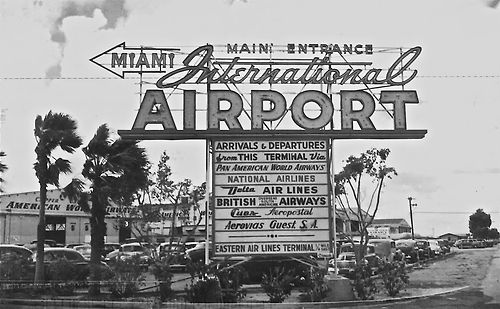

Miami was settled in 1825 by Julia Tuttle, who still to this day is the only woman noted to have founded a major city in the United States. In the late nineteenth century, the zone was known as "Biscayne Bay Country", and reports depicted it as a promising wild and one of the finest building sites in Florida. Today, Miami has grown into a city known for inventive architecture, an urban core great for young professionals, and a blend of cultures through Latin and Caribbean migration and Cubans seeking refuge after Fidel Castro rose to power.
Miami is one of the U.S.'s – and the world’s – most cultural destinations. Miami is filled with exquisite hotels in Miami Beach and the historic hidden gems of Coral Gables. You'll discover art festivals and food and wine delicacy in South Beach and the Art Deco District. There's endless opportunities for deep-sea fishing and golf and tennis in Key Biscayne and Fisher Island. You can enjoy the excitement of Calle Ocho and the highly caffeinated vitality of Little Havana. There are also boundless shopping opportunities in the cutting edge, modern shopping centers of Brickell and calm, individual consideration offered by the family-claimed shops of Coconut Grove. Miami additionally has an international airport and the world's busiest cruise port, as well as professional sports teams in football, basketball, soccer, and baseball.
When contrasting with the harsh winters of urban areas like Chicago and New York, Miami's tropical atmosphere is desirable over to those who desire ocean breezes and soothing warm temperatures all year. In fact, there hasn't been any recorded snowfall in Miami since 1977. When visiting Miami, you can expect the average temperature to be anywhere from 60-90 degrees Fahrenheit nearly year-round. In any case, despite the fact that it's warm, Miami isn't dry like in the southwest. Precipitation isn't rare, and the city's seaside area allows for finding cooler parts of the city to never be an issue.
{kind=link}
{kind=link}